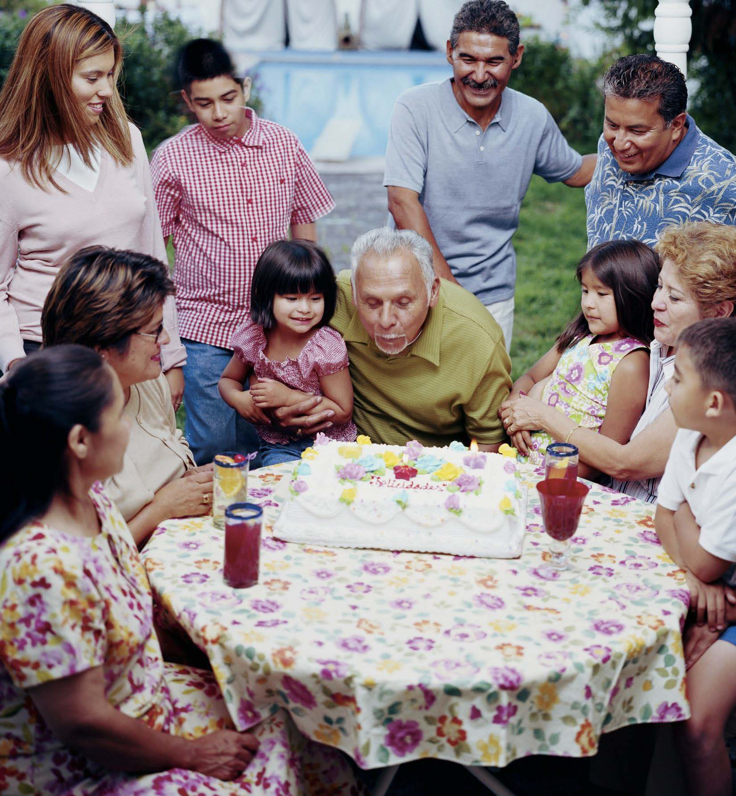

Lifespan Development: A Psychological Perspective

Preface
Lifespan Development: A Psychological Perspective
Second Edition
By Martha Lally and Suzanne Valentine-French (Published 2019)
This Open Education Resource (OER) textbook was funded by a grant from the College of Lake County Foundation and supported by the Business and Social Sciences Division.
This textbook can be found at: http://dept.clcillinois.edu/psy/LifespanDevelopment.pdf
Publication is under the following license: Creative Commons Attribution-Noncommercial-Share Alike 3.0 unported license to view a copy of this license, visit http://creativecommons.org/licenses/by-nc-sa/3.0/ or send a letter to Creative Commons, 171 Second Street, Suite 300, San Francisco, California, 94105, USA.
Bookdown adaptation by C. Nathalie Yuen.
Changes Made in This Derivative
There were minor changes made in this adaptation from the second edition: Lifespan Development: A Psychological Perspective, Second Edition by Martha Lally and Suzanne Valentine-French and is used under a CC BY 4.0 international license. Chapter and section numbers refer to this adaptation.
Those changes include:
- Several figures were not available and were omitted. Paragraphs that included references to unavailable figures were revised.
- Images originally identified as tables were included as figures.
- Figure and table numbers were revised to account for availability and revisions.
- Chapter 1: In 1.1.5 Contemporary Theories, Ecological Systems Theory subsection, revised Mesosystem paragraph.
- Chapter 2: In 2.1.2 Genetic Disorders, changed Table 2.1 to a callout.
- Chapter 2: In 2.1.3 Chromosomal Abnormalities, changed Down Syndrome prevalence rates from Illinois to United States.
- Chapter 2: In 2.1.3 Chromosomal Abnormalities, changed Table 2.3 to callout.
- Chapter 3: In 3.1.3 From Reflexes to Voluntary Movements, changed Table 3.1 to callout.
- Chapter 4: In 4.3.7 Parenting Styles, changed Table 4.3: Comparison of Four Parenting Styles.
- Chapter 5: In 5.1.2 Sports, changed Table 5.1 to plot.
- Chapter 5: In 5.2.2 Information Processing, changed Table 5.2 to plot.
- Chapter 6: In 6.1.5 Adolescent Sexual Activity, updated Adolescent Pregnancy figure (originally Figure 6.8).
- Chapter 6: In 6.1.6 Eating Disorders, changed Table 6.1 to a callout.
- Chapter 6: In 6.3.2 Erikson: Identity vs. Role Confusion, changed Table 6.2 Marcia’s Four Identity Statuses.
- Chapter 8: In 8.1.5 Sleep, added figure based on Table 8.6 Presence of Children and Sleep.
- Chapter 9: In 9.2.3 Sensory Changes in Late Adulthood, changed Table 9.3 to callout note.
- Chapter 10: In
- Updated Figure 10.2